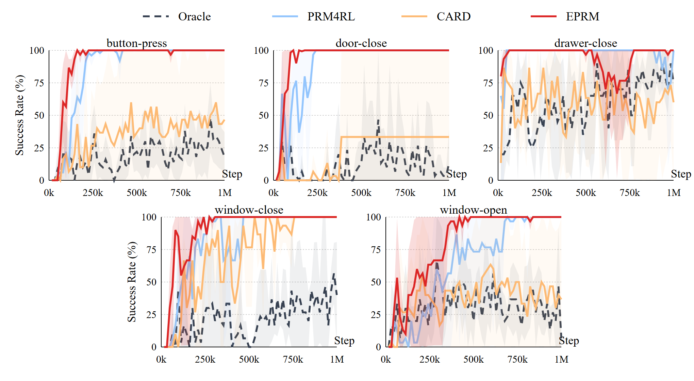
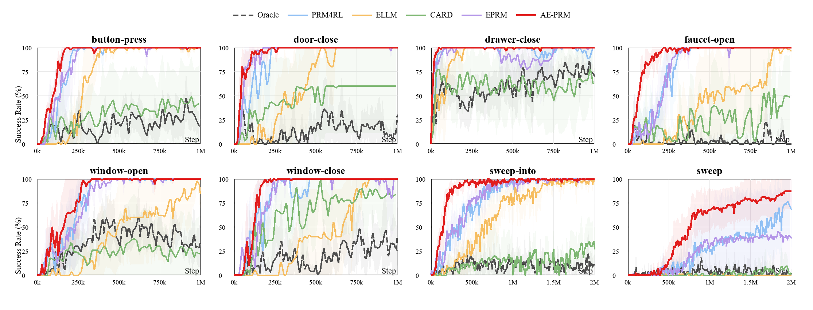
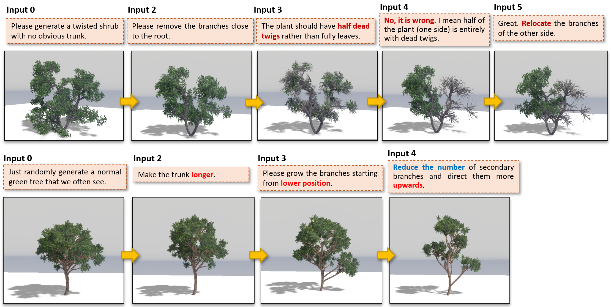
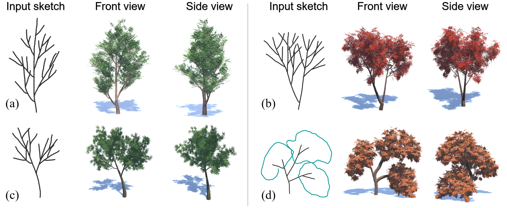
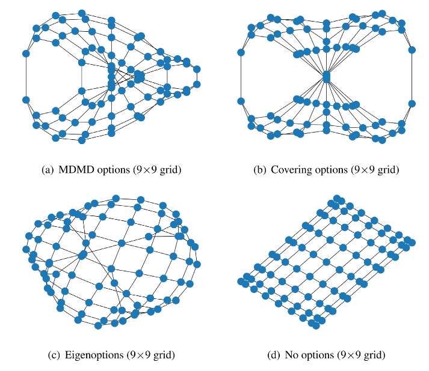
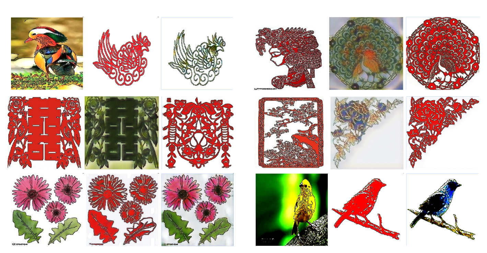
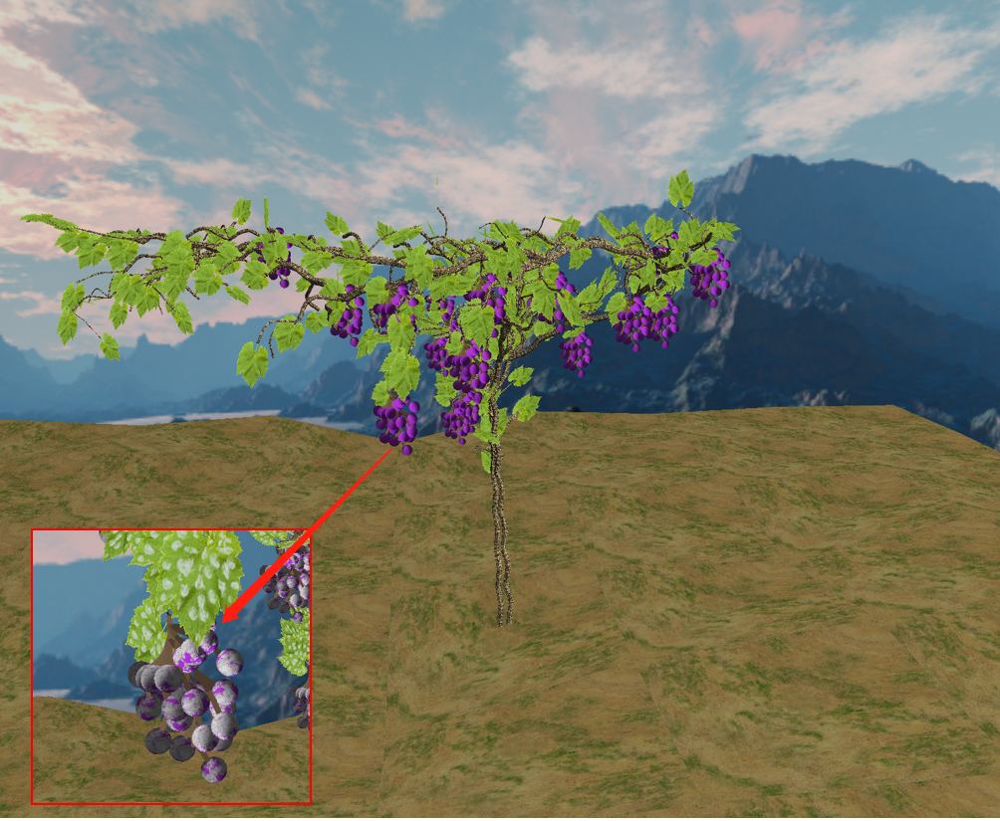

Reinforcement Learning
Reward modeling, sample-efficient learning, episodic memory, exploration, and robust policy optimization.
About me
I am a third-year PhD candidate in Information Science at JAIST, advised by Prof. Xianchao Zhu and Prof. Van-Nam Huynh.
My research spans deep reinforcement learning, large language models, and computer graphics. I am particularly interested in reward generation, efficient exploration, controllable 3D content creation, and the connections between learning systems and structured visual worlds.
Research
Three connected directions shape my current work.
Reward modeling, sample-efficient learning, episodic memory, exploration, and robust policy optimization.
LLM-generated reward functions, progress reasoning, task vectors, and constraint-guided policy learning.
Controllable 3D botanical modeling, sketch-based generation, geometry processing, and visual simulation.
Selected work

Ruiyuan Zhang, Xianchao Zhu, Van-Nam Huynh
LLM × Reinforcement Learning
Ruiyuan Zhang, Xianchao Zhu, Xiaojie Zhen, Van-Nam Huynh

Ruiyuan Zhang, Zhihao Liu, Van-Nam Huynh

Zhihao Liu, Yu Li, Fangyuan Tu, Ruiyuan Zhang, Zhanglin Chen, Naoto Yokoya

Xianchao Zhu, Ruiyuan Zhang, William Zhu
Paper ↗Background
Apr 2024 — Present
Japan Advanced Institute of Science and Technology
Nov 2022 — Aug 2023
The Chinese University of Hong Kong, Shenzhen · Supervisor: Prof. Guiliang Liu
Sep 2019 — Jun 2022
University of Electronic Science and Technology of China · GPA 3.69 / 4.0
Sep 2015 — Jun 2019
Northwest A&F University · Ranked 1 / 99 for three years
Selected projects
Research prototypes and useful experiments.
Task vectors and in-context learning mechanisms in transformer language models.
Using language models to encode task constraints and guide policy optimization.

Unpaired GAN-based generation for traditional paper-cutting visual styles.

Visual simulation of grape growth and downy mildew progression.
Notes & writing
I write about information theory, learning systems, and the tools I build along the way.